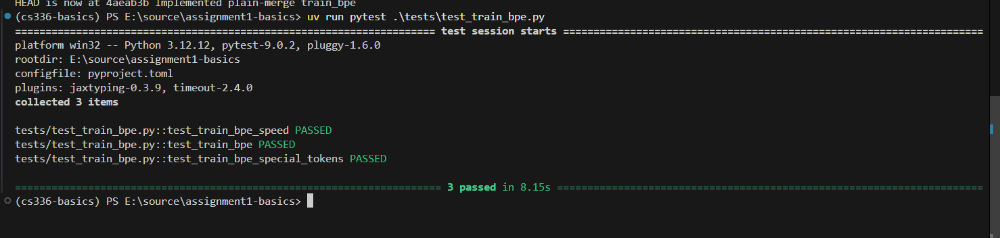
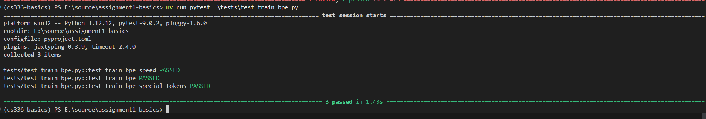

BPE Tokenizer全称Byte-Pair Encoding Tokenizer，是语言模型的文本编码部分的算法，其核心思想介于基于Word的方法与基于Character的方法之间，具体为：初始时词表只包含Special tokens以及一个字节的256个值对应的symbol（基于character的方法），训练过程中，统计训练语料中相邻字节串的计数，将最大计数字节串pair合并为一个symbol，并作为新的词加入词表。如此往复。
根据handout，可将训练过程总结如下
词表初始化
先将特殊token放入词表，然后将0-255这些字节值放入词表。
预分词
如果每次都从头到尾去扫描所有文本的邻近pair，那么开销很大，讲义提出的是进行预分词，也就是预先将文本分成多个小的词，统计这些词的出现次数
在这之后统计邻近pair时，pair的出现次数
同时还能够将符号与词分开。
BPE Merge
一轮merge的过程如下：
对每个预分词的词，统计相邻部分的出现次数。如某个词由bytes tuple组成：('a', 'b', 'a', 'b')（出于篇幅原因，省略''前的bytes标注），统计出相邻pair出现次数dict：('a', 'b'): 2, ('b', 'a'): 1
选出出现次数最高的pair，并merge。如上述例子，假设对所有词统计完pair出现次数并reduce之后，得出一个出现次数最高的pair：('a', 'b')，merge过程将所有词出现pair的部分进行合并，如上述某个词整个词一旦出现这个pair的部分都进行合并，变成('ab', 'ab')。对其他词同样进行合并。并将merge行为加入到行为集合merge 'a', 'b'，将pair产生的新词加入词表vocab.append('a'+'b')
回到过程1开启下一轮
直到达到所需的merge次数，结束并返回merge行为列表以及训练后的词表vocab。
处理特殊token
语料中出现文本分割相关词，或一些标记词，除了在词表中加入以外，不需要其他行为。
因此，需要以语料中这些词作为分隔符，分割语料文本，同时将这些特殊token隐藏避免纳入merge过程。
def train_bpe( input_path: str | os.PathLike, vocab_size: int, special_tokens: list[str], **kwargs,) -> tuple[dict[int, bytes], list[tuple[bytes, bytes]]]:预构建词表
x vocab: dict[int, bytes] = {} merge: list[tuple[bytes, bytes]] = []
# 1. pre construct a vocab for i, x in enumerate(special_tokens): vocab[i] = x.encode('utf-8') for i in range(len(special_tokens), len(special_tokens) + 256): vocab[i] = bytes([i - len(special_tokens)]) 预分词
xxxxxxxxxxdef pre_tok(start: int, end: int, input_path: str, special_tokens: list[str]) -> dict[tuple[bytes, ...], int]: """ the each-process processing function of pre-tokenization. parallelized reading chunks and processing """ # result: dict[tuple[bytes, ...], int] result = defaultdict(int) with open(input_path, "rb") as f: f.seek(start) chunk = f.read(end - start).decode('utf-8', errors="ignore") parts = re.split("|".join(map(re.escape, special_tokens)), chunk)
# pretokenizes each part and count occurrences. PAT = r"""'(?:[sdmt]|ll|ve|re)| ?\p{L}+| ?\p{N}+| ?[^\s\p{L}\p{N}]+|\s+(?!\S)|\s+'""" for part in parts: for pretok in re.finditer(PAT, part): pretok = pretok.group() key = tuple(bytes([x]) for x in pretok.encode('utf-8')) result[key] += 1 return result
def pre_tokenization(input_path: str | os.PathLike, special_tokens: list[str]) -> dict[tuple[bytes, ...], int]: """ pre splits the corpus by chunks(which is parallel) and run pre-tokenization then return each token(the pre tokenized word)'s occurence count dict. """ ## Usage with open(input_path, "rb") as f: num_processes = 4 pool = Pool(num_processes) all_jobs = [] boundaries = find_chunk_boundaries(f, num_processes, [x.encode('utf-8') for x in special_tokens])
for start, end in zip(boundaries[:-1], boundaries[1:]): job = pool.apply_async(pre_tok, args=(start, end, input_path, special_tokens,)) all_jobs.append(job)
dicts = [job.get() for job in all_jobs]
pool.close() pool.join()
results = defaultdict(int)
for d in dicts: for k,v in d.items(): results[k] += v return results # 2. run pretokenizationpretoks: dict[tuple[bytes,...], int] = pre_tokenization(input_path, special_tokens) merge loop
xxxxxxxxxxdef count_adjacent_pairs(pretoks: dict[tuple[bytes,...],int]) -> dict[tuple[bytes, bytes], int]: """ count the adj pairs count """ counts = defaultdict(int) for k,v in pretoks.items(): for byte1, byte2 in zip(k, k[1:]): counts[(byte1, byte2)] += v return counts
def do_merge(pretoks: dict[tuple[bytes,...],int], pair: tuple[bytes, bytes]) -> dict[tuple[bytes,...],int]: """ merge pretoks by pair, and return merged dict """ new_toks = {} for key,value in pretoks.items(): if pair[0] not in key and pair[1] not in key: new_toks[key] = value continue new_key = []
i = 0 while i < len(key): if i + 1 < len(key) and key[i] == pair[0] and key[i+1] == pair[1]: new_key.append(pair[0]+pair[1]) i += 2 else: new_key.append(key[i]) i += 1 new_toks[tuple(new_key)] = value return new_toks
# 3. run BPE merge num_merges = vocab_size - 256 - len(special_tokens)
for i in range(num_merges): # 1. count counts = count_adjacent_pairs(pretoks)
# 2. Find the most common pair pair = max(counts, key=lambda k: (counts[k], k)) # 3. add new vocab new_vocab_idx = i + 256 + len(special_tokens) vocab[new_vocab_idx] = pair[0] + pair[1]
# 4. do merge merge.append(pair) pretoks = do_merge(pretoks, pair) return vocab, merge完整代码见仓库
问题定义
在一轮的merge过程中，每次都需要对所有预分词的词，从头到尾扫描相邻对出现次数，从而重新统计出count进行最高次数pair选择过程。
关键观察
指定某个pair，对其进行merge，其只影响这个pair所在的预分词的词，继续细分的话只影响了这个pair出现位置的左邻居、右邻居以及它本身。
解决方案
根据观察的性质，提出方法：维护邻居pair计数和每个pair所在的位置；每次merge根据存储的pair的位置，在预分词的词列表中，快速找到要更新的词；以及根据其所在位置周围的信息，根据本次merge的变化相应的更新pair计数值。
优点
维护的计数改善了每次循环要重新进行全遍历，而发生更改的计数只有一小部分的问题
索引能够快速找到pair所对应的要更新的词与位置，从而快速更新计数值。
核心方法是维护pairs的计数counts，包含初始化与更新。
因为需要实时更新counts与原语料，所以引入了pairs出现的索引pair_locations
确定到代码只需要修改两处：
将loop的count计算提前到loop前，减少到一次计算
do_merge进行合并与更新的操作
细节
对于每次找到的要合并的pair，记为(x,y)，其左侧邻居bytes为a,右侧邻居bytes为b. 找到pair对应的index集合，当前遍历到集合的某个索引，索引到某个词word1，则进行两种操作：1. 将该词出现该pair的一对相邻bytes合并为一个bytes 2. 相应的更新count 3. 若合并后出现新的相邻pair，则扩充pair_locations
counts更新过程为
delete阶段
xxxxxxxxxxcounts[x,y] -= word1.countscounts[a,x] -= word1.countscounts[y,b] -= word1.counts
update阶段
xxxxxxxxxxcounts[a, xy] += word1.countscounts[xy, b] += word1.counts
对该pair对应的索引集合中的其他索引所指向的词也应该如此。
尝试
复用预分词阶段产生的pretoks: dict[tuple[bytes,...],int]，维护pair_locations: dict[tuple[bytes,bytes], tuple[bytes,...]]，以索引pair对应的预分词的词。
弱点
在merge过程中，假设当前正在处理某个词A，而pair_locations中有两个不同的pair1：(x1, y1), pair2: (x2, y2)指向A，那么假设此时为pair1正在更新词，同时更新counts，那么由于dict的缺陷，更新时只能通过删除key并加新key的方式实现，那么经过这一个操作之后，pair2指向的该A作为key去索引pretoks将作为old key失效，也就是经典的悬垂指针问题
思路
可以将弱点总结为：
需要将dict变为，方便变更key字段的数据结构。
locations需要方便的索引到快速变化更新的对象。
同时我们发现：
预分词为无序。
所以得出：
利用面向对象方法维护快速更新的对象。
利用list存储实现快速索引。
因此引出如下实现
xxxxxxxxxxdef count_adjacent_pairs(tokens: list[Token]) -> tuple[dict[tuple[bytes, bytes], int], dict[tuple[bytes, bytes], set[int]]]: """ count the adj pairs count cache, and the locations of pair """ counts = defaultdict(int) pair_locations = defaultdict(set[int]) for index, token in enumerate(tokens): for byte1, byte2 in zip(token.symbols, token.symbols[1:]): counts[(byte1, byte2)] += token.count pair_locations[(byte1, byte2)].add(index) # ensuring each Token_{i} is different(the dict has ensured that) return counts, pair_locations根据如下特殊例子，想到对词内进行流式构造与更新的方法
x y x y merge xy xy
counts:(x,y): 2 (y,x): 1 ->
merge第一对xy
(y,x)--, (x,y)-- -> (x,y): 1
(xy, x)++ -> (x,y):1 (xy, x): 1
操作一结束后的中间结果为xy x y，此时merge第二对xy
(x,y)--, (xy, x)--
(xy, xy)++
即，特例情况下，流式更新方法依然有效。
读者可以尝试推理一下更特殊的例子，如a a a a a a
同时，考虑到在流式更新的时候，new_symbols还没有完全构造，无法将新的pairs的位置更新到pair_locations，因此采用稍微粗粒度的统计方法，在该索引的词完全更新完毕之后，根据count的变化值判断是否有新pair出现，以及进行新位置的索引插入。
此外，可以参考如下作者思考的问答：
Q1. 处理完一个pair之后，删除该pair_locations对应项是否对过程有影响？
没有影响。可以发现，处理完毕一个pair之后，以后的loop不可能再出现处理同一个pair的过程。在本代码实现中为了简便并没有删除对应的pair_locations项。
Q2. 在删除旧pairs过程中，为什么不删除旧的pair_locations对应的该词的index？例如正在处理pairA，而pairA对应的第一个byte跟左边邻居byte所组成的left_adj，要拿去减counts，那pair_locations[left_adj]里面一定会有这个index
在本代码的实现中，可以发现处于一种较细粒度，但不是非常细粒度。本实现为了方便，只记录了对于token全表索引，此实现基于一种假设，即token的symbol不会太长，在token中重新寻找该pair的复杂度不会太高。属于一种trade-off
证明
考虑一种情况：
本token包含left_adj与pairA组成的三元字节组，同时包含只有left_adj，但没有与pairA组合的字节组。第二种分类下，本次对pairA的处理并不会将counts[left_adj]减为0，那么当未来处理到这个left_adj所对应的pair时，如果先前处理pairA时，将left_adj对应index删除，将在处理left_adj对应合并时无法找到对应的tokens索引，出现索引丢失问题。
而不删除索引也不会出现正确性的问题，因为已经更新了tokens的symbol和counts，在处理到left_adj的merge的时候，已经更新的token和counts不会有多计数或者少计数的问题。
考虑另一种情况：
token并不包含上述情况中两种分类，只有一种分类。那么合并pairA时，旧的left_adj的counts已经为0，且本token不再包含left_adj这个pair，在下次merge到这个pair的时候，无法找到对应pair，于是正确的略过了merge。于是对当前实现可以有改进方案比如判断counts[pair]是否已经为0。
细粒度方法介绍：细粒度控制pair索引
fine-grained方法的索引应该同时记录pair对于token全表的索引、以及pair对于token本身的token内索引。然后进行细粒度插入与删除。这种实现可以满足该问题对细粒度索引控制的要求。不过本实现为了简便并未采用。
xxxxxxxxxxdef do_merge(tokens: list[Token], pair: tuple[bytes, bytes], pair_locations: dict[tuple[bytes,bytes], set[int]], counts: dict[tuple[bytes, bytes], int]): """ 1. locate where pair exists in tokens by pair_locations 2. merge the pair in these tokens, update tokens token by token 3. update counts by the merge process, and update pair_locations by the merge process """ for idx in pair_locations[pair]: token_count = tokens[idx].count token_symbols = tokens[idx].symbols new_symbols = [] i = 0 counts_changes = defaultdict(int) while i < len(token_symbols): if i + 1 < len(token_symbols) and token_symbols[i] == pair[0] and token_symbols[i+1] == pair[1]:
# count change is linear. # decrease old adjacent neighburing counts. counts_changes[pair] -= 1 * token_count if i > 0: left_adj = (new_symbols[-1], token_symbols[i]) counts_changes[left_adj] -= 1 * token_count if i + 2 < len(token_symbols): right_adj = (token_symbols[i+1], token_symbols[i+2]) counts_changes[right_adj] -= 1 * token_count new_symbols.append(pair[0]+pair[1]) # pair[0] is key[i], pair[1] is key[i+1]
# increase new adjacent neighburing counts. notice that this is linear processing # so using new-old bounding, keeps the invariant of loop if len(new_symbols) > 1: # the invariant is that, tail is the just merged pair left_adj = (new_symbols[-2], new_symbols[-1]) counts_changes[left_adj] += 1 * token_count if i + 2 < len(token_symbols): # the invariant is that, i + 2 is the linear process's right neighbor right_adj = (new_symbols[-1], token_symbols[i+2]) counts_changes[right_adj] += 1 * token_count i += 2 else: new_symbols.append(token_symbols[i]) i += 1 tokens[idx].symbols = new_symbols # the new adjacent counts, finally added to locations. # and update variation to counts for k, v in counts_changes.items(): counts[k] += v if v > 0: pair_locations[k].add(idx)使用cs336的test脚本进行初步测试。基于corpus.en（test_train_bpe）/tinystories_sample_5M.txt（test_train_bpe_special_tokens）
旧版8.15秒，性能优化版本1.43秒。


本实践报告介绍了Language Modeling课程中Tokenizer作为自然语言与模型理解之间转化桥梁的作用，重点关注于BPE Tokenizer的训练过程性能优化，针对朴素每轮merge重扫描相邻对的低效冗余问题，提出并实现缓存相邻pair、针对性更新循环过程所基于的当前merge词语料库的数据结构与算法，并由这个需求提出了pair实时索引的数据结构与算法，该优化将BPE Tokenizer在测试集上的训练时间从8.15s降低至1.43s，显著加快了训练过程。
同时，文中还分析了采用更细粒度的实现的可能性，为后人提供一定的优化参考。
[1] CS336 Staff. cs336_assignment1_basics[EB/OL]. (2026-03-30) [2026-07-10]. https://github.com/stanford-cs336/assignment1-basics
[2] CME 295 Staff. Lecture1: Transformer slides[EB/OL]. (2025-09-26) [2026-07-10]. https://cme295.stanford.edu/slides/fall25-cme295-lecture1.pdf
xxxxxxxxxxdef do_merge(tokens: list[Token], pair: tuple[bytes, bytes], pair_locations: dict[tuple[bytes,bytes], set[int]], counts: dict[tuple[bytes, bytes], int]): """ 1. locate where pair exists in tokens by pair_locations 2. merge the pair in these tokens, update tokens token by token 3. update counts by the merge process, and update pair_locations by the merge process """ for idx in pair_locations[pair]: token_count = tokens[idx].count token_symbols = tokens[idx].symbols new_key = [] i = 0 while i < len(token_symbols): if i + 1 < len(token_symbols) and token_symbols[i] == pair[0] and token_symbols[i+1] == pair[1]: new_key.append(pair[0]+pair[1]) # pair[0] is key[i], pair[1] is key[i+1]
counts[pair] -= 1 * token_count if i > 0: left_adj = (token_symbols[i-1], token_symbols[i]) counts[left_adj] -= 1 * token_count if i + 2 < len(token_symbols): right_adj = (token_symbols[i+1], token_symbols[i+2]) counts[right_adj] -= 1 * token_count if len(new_key) > 1: left_adj = (new_key[-2], new_key[-1]) counts[left_adj] += 1 * token_count if i + 2 < len(token_symbols): right_adj = (new_key[-1], token_symbols[i+2]) counts[right_adj] += 1 * token_count i += 2 else: new_key.append(token_symbols[i]) i += 1 像这个的问题就是，我无法知道该什么时候更改pair_locations，因为有些中间locations根本不必要插入，频繁插入和删除反而有点麻烦
改进方法是变为coarse-grained的记录，只记录整个token merge前，merge后，对locations的变化和counts的变化，在token merge之后的最后才进行更新和统计。